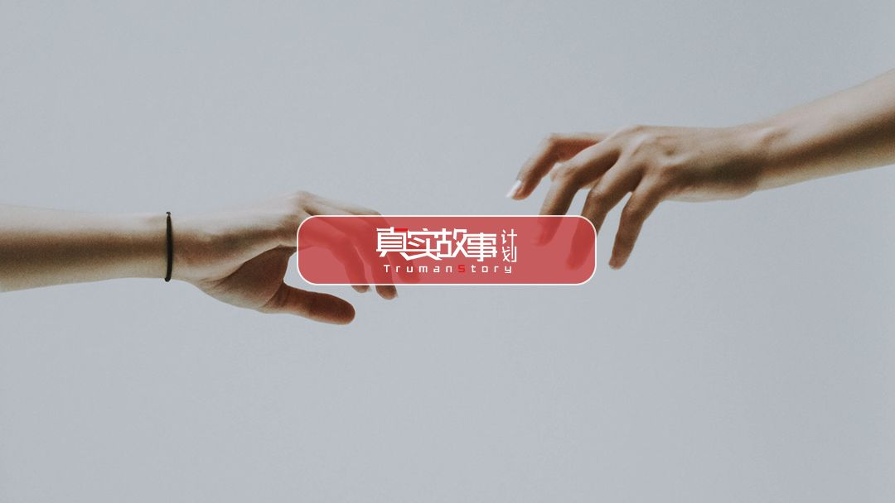
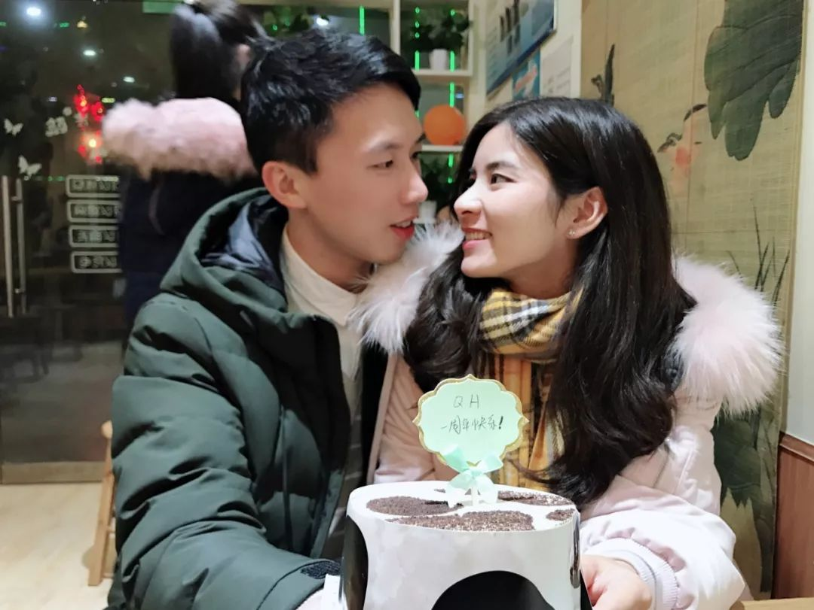
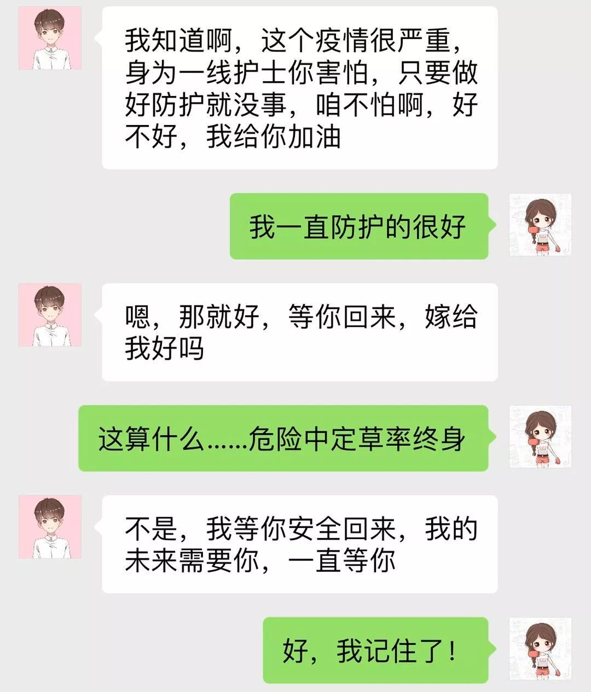
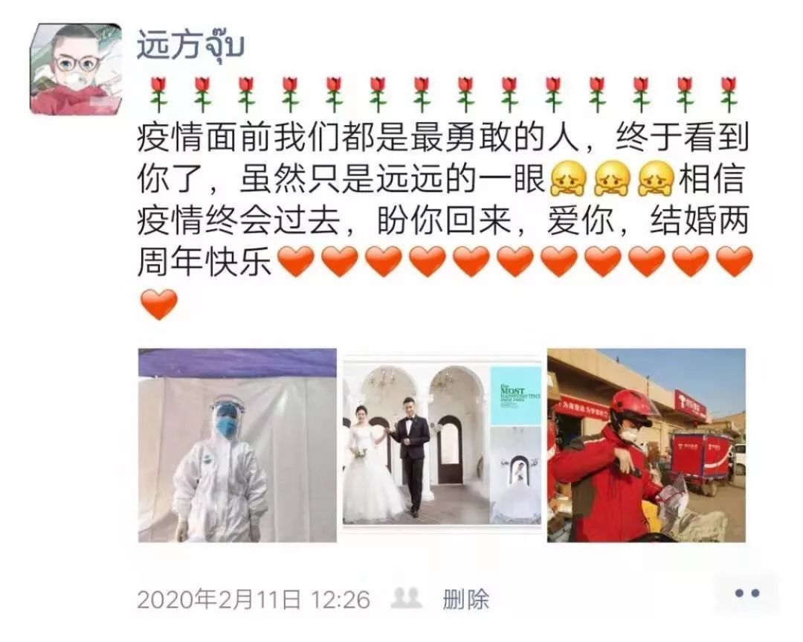

同志情侣在疫情一线|“生命所系，性命相托。我守百姓健康，你守一方平安”
原文链接 备份链接 “招呼好乐乐、可可。”登机后，晓阳立即给男友林峰发了微信，不放心他们一起养的两只宠物，其实是更不放心男友。 “你才要照顾好自己。” “要登机了吗？” “那俩小的你不用担心。” “一落地记得给我打个电话。” 男友光速回 …

爱情始终是爱情，距离生死越近，爱就越浓郁。新冠肺炎疫情，强行打断了时间的连接，在隔离、空白和生死间，将日常生活的本质的呈现出来。疫情时期的爱情，与此前此后都是不一样的。
封城前，他花了三个小时买回来一个蛋糕
2月2日，是我和先生的结婚纪念日。我们所在的县城即将封城。下午，所有加油站关闭，晚上八点，红绿灯变成红色，路上禁止通行。得知这个消息，我先生吃了中饭，戴了两层口罩，出门了。
他开着车，从县城最南端到最北端，完整地绕了一圈，几乎穿过所有核心街道。商户都关着门，路上只有巡逻的警察，零零散散可以看见几辆车。正月初九的临湘，冷清得像座空城。
我和先生是大学同学，毕业一起到深圳打拼，感情修成正果，也通过努力拥有了自己的小家。结婚一周年的纪念日，弟弟给我们买了一个蛋糕，不大，但我们很开心。
我和先生找到一家奶茶店坐下，插蜡烛许了愿，端着蛋糕拍下一张照片。他说，以后每年纪念日都要买个蛋糕，拍一张照片，拍70张。在一起九年多时间，每个重要时刻，我们都会用仪式感来记录。
图｜结婚一周年纪念日
这个结婚纪念日，我们本来计划在深圳一家浪漫的餐厅度过，可是疫情当前，唯有窝在县城里。先生绕遍了整个县城，看到五、六家蛋糕店，从核心街道到偏僻小巷，都关门了。
最后，他回到最熟悉的蛋糕店门前。门锁着，留了一个电话，试着打过去，问有没有蛋糕，对方说：“可以帮你做一个，但要等一个小时。”
于是他加微信，挑款式，在车里等了一个多小时，买回这个来之不易的蛋糕。
他拎着蛋糕进门的那一刻，我欢呼雀跃得像个孩子，瞬间的心情，就像小时候在山里，看见妈妈背着装满零食的背篓从集市回来一样。很快，开心就变为担忧。
即使戴了两层口罩，几乎全程在车里，我还是害怕他遇到感染者。如果再给我一次机会，绝不会让他冒险出去。毕竟平平安安在一起最重要。我说：“我后悔了，我不应该让你出去，真的很后怕。”
刘慧
我和外卖骑士好了
公司通知正月初十上班，我初九就回了。结果初十被告知延迟上班。我在租的房子里待着，每天吃妈妈装来的食物。过了几天，开始叫外卖。
附近有一家米线店开门，我连吃了两天，送饭的是同一个外卖小哥。第三天再叫，还是他接的单。他加了我微信，问我的情况，知道我一人在外地，经常嘘寒问暖，给我送水果送早饭。
这么危险的时刻，他一天送三次饭给我，还把自己的猫送给我，陪着我，所以我们在一起了。
李萌
他如此草率，我却等不及要嫁
我和男友平时在济南，因为家里有些事，年前一周他回了老家，说年后早点回来陪我。没想到第二天，济南就出现了患者。
1月24日，院里组织援助湖北，我当时想报名，他不让，在电话里哭着求我。我说，护士本身就是治病救人，这是我的职责。他说，你的职责就是救我，你要有什么事，我也活不了。
挂断电话，我也哭肿了眼睛。护士长看见，让我安心待在医院，劝慰说，服务济南人民也是敬业。
2018年，我们在一起。初次见面在世贸，餐厅排队的人很多，等了很久。我肚子饿得咕咕叫。他说有事出去一下，回来时，拎了一兜子零食。
他就是这样，嘴上不说，却总能用实际行动证明爱意，虽然有时很直男，但是也慢慢变得细心，为我一点点改变。
记得去年我过生日，我们一起吃完饭，牵着手经过泉城广场。广场有人在求婚，满地蜡烛摆成心形，还有拱门和气球。有人给了很多荧光棒，让我们帮忙起哄。
一切准备就绪，男主角给女方打电话，但女方一直没出现。围观的人慢慢散去。
他突然站在别人的蜡烛圈里，拿着荧光棒说要娶我，照顾我，带我去看大好河山，问我愿不愿意嫁给他。我说，你这也太草率了。他说，以后还要隆重求婚。我心里还蛮期待的。
济南的情况越来越严重。因为不想给家人添麻烦，我索性住在医院。其实我很胆小，看多了患者，害怕自己也被传染。他每天给我打电话，开导我，没接到就发信息。每次看到他的信息，我都很感动，总能重拾信心。
我们罕有机会视频，有天晚上，医院里一个孩子确诊了。他还那么小，未来的路还远。我心里难受，不敢当着孩子的面哭，于是主动和男友视频。
视频里，他的头发乱得像鸡窝，本来就瘦，几天不见，脸都瘦得凹进去了。我问他是不是没有好好吃饭，他否认，在屏幕里大口大口吃饭。我有点心酸。
在医院时间越久，我的触动就越大，到后来有些悲观，觉得人生短暂、无常，不知道明天和意外哪个会先到来。有时候顾不得吃饭，也要和他打电话。他越鼓励，我越说丧气话。
就在这样的情形下，他在微信里和我求婚了。突如其来，一点预兆没有。我还是觉得他很草率，但是心里明白，他是支撑我的一个重要原因。后来，他竟然买了钻戒。
图｜微信求婚
等到下个情人节，我们应该已经结婚了。我想去一趟迪士尼乐园，听说那里的烟花很美，能在烟花下和最爱的人相拥在一起，是很美的事。
沈珂
再坚持一下
我的一个朋友和他太太完成了封城21天连滚的壮举。
佚名
契机
特殊时期，我和室友不敢叫外卖。室友不会做饭，我写稿又没空做饭的时候，我们只能吃她蒸的玉米、山药。到了晚上我们又馋又饿，室友哭着给男友打电话，说想吃糖醋排骨。于是第二天，他从超市买了两袋吃的送到我们家，接着住下来，每天给我们做饭。
王妍
结婚纪念日的排场
距离结婚纪念日还有三天，我等不及了。2月10号，趁着中午休息期间，我拿快递箱做了一块牌子，来到县医院门外，给妻子发微信，让她空闲时到医院门口看一眼。没过一会儿，隔离帐篷门口出现了一个身影，口罩、护目镜，全身穿着肥大的防护服。我知道，那就是她。
我举起牌子，就像很多年前火车站接人那样。牌子上写：结婚两周年快乐！盼你回家！
 图｜医院门口探望
图｜医院门口探望
距离太远，妻子未必看得清上面的字。于是我又喊，结婚两周年快乐，等你回家！她听见，朝我招招手。这是大年初一以来，我们第一次见面，时长不到五分钟。
我和妻子是同村的，自小认识，毕业后结了婚。她和我同龄，是县医院重症监护室的一名护士。
疫情发生后，她自愿报名支援武汉的医疗队，院方考虑到她年龄较小，前两批队伍没有选她。但我知道，如果有下一批队伍，依她的性子，一定会继续报名。
我们的婚后生活，一直聚少离多。记得去年这时候，我在杭州修地铁。本想在纪念日当晚和她打个视频电话，好好庆祝一下，但工地上出现了临时情况，我不得不赶去，连她的微信也没能及时回复。
我始终觉得亏欠她，心里想着下一个纪念日好好陪她。就这样熬到八月，离了职。九月，回到县城在京东物流做一名快递小哥。毕竟，什么都比不过一家人在一起。
回到县城，相聚的时刻并没有富裕太多。我每天一大早出门，晚上回家，而她时常需要值夜班。
尽管如此，生活在同一屋檐下，哪怕她不在家，我还是能感受到她的气息，感受到家的温暖。冰箱里的食物、阳光晒过的衣服、鞋柜里，她码放整齐的鞋子、放在床头折页的书，都是一起生活的印记。
婚前，她不会做饭。婚后，她一直利用值夜班后调休的时间，在网上学做饭，包括我爱吃的那些面食，蒸饺、包子、炒馍花等等。
可能是担心自己做得不够好，她做完没有立刻塞给我，而是自己尝试味道，尝完再改，调整火候、咸淡，加上我们都工作忙碌，直到今天我也没机会坐下来，好好品尝一下她的手艺。

图｜张嘉鹏的朋友圈
疫情发生以来，县城其他快递都停了。我每天5:40起床，7点多到公司开始工作。特殊时期，快件都是急需品，除了口罩、消毒液等防护品，多是米面粮油、奶粉、纸尿裤等生活必需品，半分拖延不得，每天配送的快递件数平均超过100件。
即使偶尔感到疲惫，一想到她还在医院，我也并不觉得自己有多辛苦。我们没有过分的煽情，她只是告诉我，保护好自己，戴眼镜，勤洗手，多注意一些。
这好像形成了某种特别的默契，彼此间不需要甜腻的话去充塞。我知道她奋斗在一线，而我用行动为她“打外援”。这可能是我们俩人生第一次，有了一个共同的敌人。
那天，我们聊起疫情结束后的事。我说想带她出去转一转。她说想逛超市，吃火锅……讲了一大堆，最后说：“一定要好好给你做顿饭。”
张嘉鹏
送往医院的蛋糕
为了避免不必要的接触，初二以后我就关门了。2月10日，一个顾客打电话，想让我做蛋糕，我跟他说不做了。他一直磨我，说妻子是医院的护士，半月没见，没法陪她一起过情人节。这是他们婚后第一个情人节，就想送个蛋糕，让她吃点甜点心情好。我要了地址，让他挑了款式，情人节准备亲自开车去送。
图｜送去的蛋糕
王鑫
“你要是不回家，我就不吃药，等死”
按照预想，今年春节我和男友一起回家，二月初订婚。这是我们相遇的第九个年头，房子已经安置好，6月底我辞掉工作，离开武汉，7月结婚，一切本该水到渠成。
疫情的事我本来没放在心上，直到放假前的周一，同事告诉我，她表姐在医院工作，说情况严重，我这才感到担忧。
第二天，我开始咳嗽，看看网上的新闻，决定不回去了。那时候怕家人和男友担心，没告诉他们，只是说回家的车票没买上，要晚几天。
1月23日，武汉封城。男友打电话，叫我赶紧回去。那时候我已经开始发烧，体温38.7度，不敢去医院，自己在家吃了药。
那通电话打了两个小时，以前觉得两人隔着电话痛哭，纯粹是电影和偶像剧里的戏份，这回轮到我了。手里攥着电话，屏幕是湿的，我竟然真说了一句，如果我这回活不了，你就忘了我。
男友性格内向，平时不善表达，更不会说什么甜言蜜语，但偶尔的行为会让我惊讶。
记得我们度过的第一个情人节，约好逛街吃饭，餐厅座位都订好了，结果当天早上，他突然说家里有事情，让我先去餐厅，他忙完了就赶过来。
那是个大年初七，天气很冷，满街都是情侣，我独自在街上转悠，心里越想越气。到餐厅等待半个小时，给他发信息也不回。
这时，餐厅里搞促销活动的布偶走到我面前，手里端着一纸箱，让我抽奖。我抽出一张纸条，上面写着：拥抱布偶。我愣了一下，布偶摘掉头套，男友笑嘻嘻地站在我面前。
挂掉电话没多久，我又接到了男友妈妈的电话。这才知道，我们打电话的时候，他就在收拾行李，要来武汉找我，现在已经从家里走了。电话里，他压根没提这回事。
我能感受到男友妈妈的伤心和绝望，害怕自己绷不住，赶紧打电话给他，狠狠地说，你要是不回家，我就不吃药，等死。
那天晚上，幽蓝的光线透过窗帘，一闪一闪的。我趴到窗边，看见救护车停在院子里，几个身穿防护服的医生在往车上拉人。
那是我第一次亲眼看见穿防护服的医生。以前都是通过新闻报道，隐约明白疫情的严重，但总归隔着一层网络，好像是另一个世界发生的。亲眼目睹的瞬间，一股战栗从脚底漫上脊梁。身体好像不需要经过大脑，依靠本能就可以感受到那种恐惧。
我这时完全明白，自己就在这场风暴的正中心，孤零零的，没有可以躲藏的地方。想到这儿，咳嗽好像又加重了。
夜里，我做梦了。梦见有人要杀我，掐住我的脖子，我反抗，想逃跑，怎么也跑不出去。
第二天早上，我起床煮面，煎了鸡蛋。胃口很差，鸡蛋咬了两口，面几乎没动，强迫自己喝掉汤。同事打来电话，说公司里有确诊的，问我的情况。我心里害怕，声称自己一切正常。挂掉电话，整个人蜷缩成一团，浑身湿透了，呼吸有些困难。
男友打来电话，尽可能地安慰我。他请教了学医的同学，还在网上查了资料，让我抬高枕头，坐起来，这样感觉会好些。
我觉得自己很不争气，和他说着说着就想哭。他不停地哄我，将我们过去的事情，和以后的生活，还从我爸妈那里找来了我小时候的故事书，一页一页讲给我听。
我靠着墙，听他的声音，尽量不去想其他的，整个人好像回到了童年时代。
 图｜聊天截图
图｜聊天截图
曾经，我是不相信一些所谓的精神力量的。现在我明白，来自他的陪伴、鼓励和安慰……这些精神力量虽然治不了我的病，却能退散恐惧和慌乱，让我鼓起勇气面对一切。
我主动向社区汇报了病情，通过线上志愿者进入到诊治群。医生说我的情况并不严重，加上年轻，抵抗力强，按时吃药，保持良好的心态，就能扛过去。
情人节要到了。我想给男友织一件毛衣。他很瘦，冬天怕冷，总是感冒。我嘴上说给他织毛衣，却总忘在脑后，三年了也没动手。病好以后，我要把它当作最重要的事去做。
李晓瑛
- END -
本期策划：李一伦

原文链接 备份链接 “招呼好乐乐、可可。”登机后，晓阳立即给男友林峰发了微信，不放心他们一起养的两只宠物，其实是更不放心男友。 “你才要照顾好自己。” “要登机了吗？” “那俩小的你不用担心。” “一落地记得给我打个电话。” 男友光速回 …
原文链接 备份链接 “如果再征召，你就报名，争取加入第二支队伍。我结束隔离后，也会加入心理援助队伍。你去，我也去。他们不能来，我们过去！” 配图 | 关斌斌 征 稿 从2019年12月8日首例武汉新型冠状病毒肺炎患者出现，到2020年1 …
原文链接 备份链接 *************▲************* 2020年1月28日，武汉协和医院感染科病房。 （新华社/图） 全文共5066字，阅读大约需要7分钟。 从那时起，护士们戴的不再是常规的护士帽，换成了另一种蓝 …
原文链接 备份链接 【疫情之下】是苍衣社开设的非虚构故事专栏，记录在新型冠状病毒疫情蔓延时，普通中国人的抗疫报告。 大家好，我是脸叔。 每早起来，我第一件事就是看新冠肺炎疫情的实时动态。确诊病例不断上涨，疫情拐点还不知道何时能来。到目 …
原文链接 备份链接 _ _ _ _ 武汉这个地方，不南不北，所以他们会有北方人的蛮劲，也会有南方人的精明。喜欢过小日子。而且热爱武汉爱得不由分说，很多武汉人，是不容任何人说武汉一点不好的。 _ _ _ _ 记者 | …